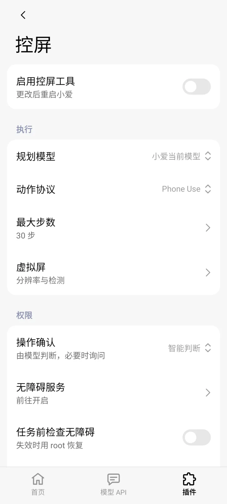
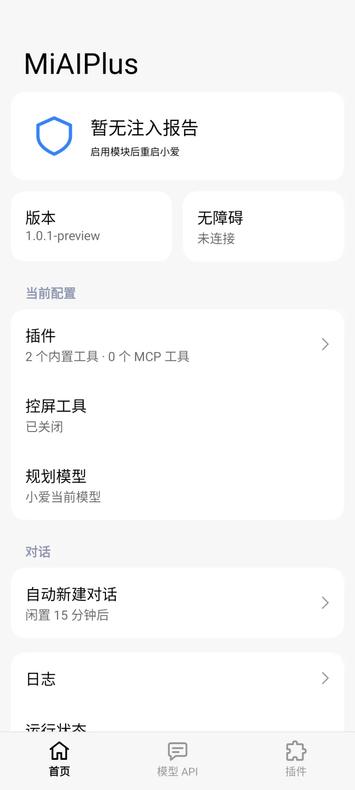
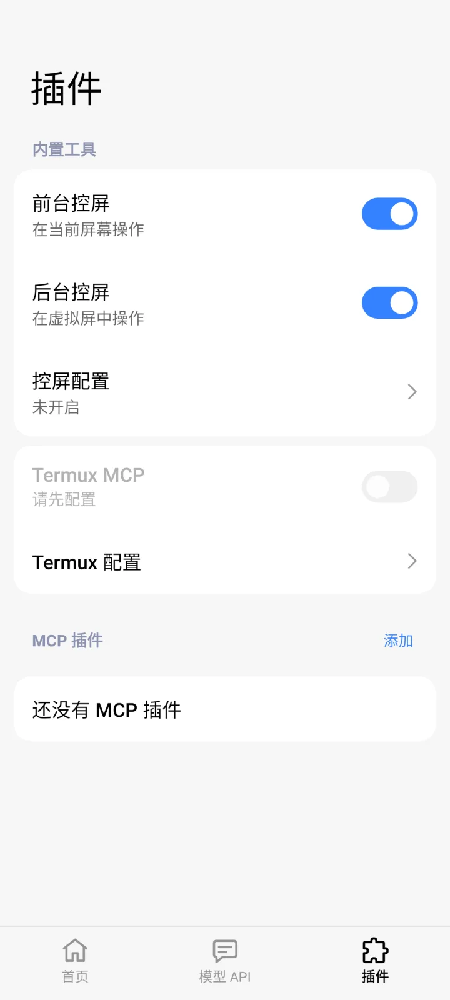
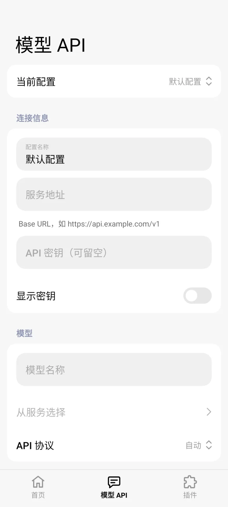

前台控屏
在主屏上打开应用、点击、滑动和输入
小爱看屏幕、规划下一步、执行动作，直到任务完成。通知岛实时显示进度，展开就能停止。结束后点完成通知，回到原来的对话。
- 规划模型默认是「小爱当前模型」
- 最大步数可调，默认 30 步
- 只需无障碍服务，不需要 root

超级小爱 · LSPosed 模块 · 开源
MiAIPlus 给超级小爱加上操作手机的能力，并能接入 MCP 工具和你自己的模型。默认使用小爱当前模型，无需额外 API。
需要 HyperOS 3+、LSPosed（API 102）与超级小爱 8.2.65.4714 或 8.3.30.4420。

前台控屏
小爱看屏幕、规划下一步、执行动作，直到任务完成。通知岛实时显示进度，展开就能停止。结束后点完成通知，回到原来的对话。

后台控屏
对小爱说「在后台操作」，任务就在一块独立的虚拟屏上执行，你继续用主屏，键盘和触摸互不打扰。
MCP 插件
填入 MCP 服务地址，获取工具后开启，小爱就能在对话中调用它们。

自定义模型
填写服务地址、API 密钥和模型名称，开启「使用外部模型」即可。

手动确认、智能判断或自动执行。
不操作锁屏、密码和验证码。
通知岛显示进度，展开即可停止。
不用，默认使用小爱当前模型。
可以。只有后台控屏和 Termux 一键配置需要 root。
在「首页 → 日志」开启「详细日志」，复现后查看记录，或保存、分享 ZIP，附在 Issue 里。